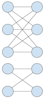
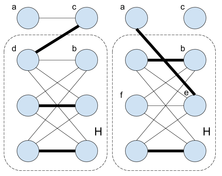

As the first step in solving this problem, we will move it from worker/factory terms to graph terms: we are given a bipartite graph with N vertices in each part, and need to add the smallest amount of edges to this graph to guarantee that every maximal matching (one where it is impossible to add more edges) is a perfect matching (one which covers all vertices).
In order to determine that, we need to understand which bipartite graphs have the property that every maximal matching is perfect. One can tackle this part by drawing a few graphs on paper and trying to add edges one by one to find a maximal matching.
After a few experiments, we can form a hypothesis: every maximal matching is perfect if and
only if each connected component of the bipartite graph is a
complete bipartite graph
with same number of
vertices in each part. The "if" part is somewhat clear, but the "only if" part
looks surprising at first and definitely needs a formal proof, which you can find at the end of
this editorial. Here's an example of such graph:

Now we can return to solving our problem. As the first step, we need to find the number of vertices in each half for each connected components of the graph. Let us put those numbers into a list of pairs, one pair per connected component: (p1, q1), (p2, q2), ... The above hypothesis tells us that we need to split this list into groups such that in each group the sum r of all ps equals the sum of all qs, those groups corresponding to the connected components of the graph after adding more edges. The number of added edges is the total number of edges in the resulting graph minus the number edges we have initially, and the number of edges in the resulting graph is equal to the sum of squares of rs. Thus we need to minimize the sum of squares of rs.
Since N is quite small — up to 25 — there are quite a few approaches that work, almost all revolving around dynamic programming/memoization.
Here is one possibility: for each subset Y of the (multi-)set X of pairs we have, and each number t between 0 and N, we will check if it is possible to group all components in Y into groups in such a way that there are several balanced groups with total size t, and possibly one unbalanced group with all remaining components. In case it is possible, we will find the smallest possible sum of squares of sizes of the balanced groups, denoted as dpY,t. Looking at dpX,N will give us the answer to the problem.
At first sight, it seems that we are considering 250 subsets here as we might have up to 50 components in the original graph (if we have no edges at all), but we can note that equal components are interchangeable, so a graph with no edges simply has 25 components of one type and 25 components of the other type, and thus has the total of 26*26=676 different subsets of components. The maximum amount of different subsets of components for N=25 is 43008, formed by the following initial components: 6×(0,1), 5×(1,0), 3×(1,1), 1×(1,2), 1×(1,3), 1×(1,4), 1×(2,1), 1×(2,2), 1×(3,1), 1×(3,2), 1×(4,1).
The most straightforward way to compute the dpY,t values is to use the so-called forward dynamic programming: after finding dpY,t, we will iterate over all ways to add a new element to the unbalanced group in Y, updating t in case the unbalanced group becomes balanced.
All that is left is to prove the hypothesis. We will prove by contradiction: assume that the hypothesis is false — in other words, that there exists a bipartite graph where every maximal matching is perfect, but one of its connected components is not a complete bipartite graph with same number of vertices in each part.
Consider such counterexample G with the smallest number of vertices (note that looking at the smallest counterexample is essentially the same as proving by induction). First of all, G is connected — otherwise any of its connected components would form a smaller counterexample. It is also clear that both its parts have the same number of vertices, as otherwise no perfect matching exists at all, while at least one maximal matching always exists, so we would have a contradiction. Since G is a counterexample, it is missing at least one edge. Let us say that the missing edge connects vertices a and b.
Consider any edge (a, c) that exists from a (there is one since G is connected). Consider the graph G' obtained by removing a, c and all their incident edges from G. Every maximal matching in this smaller graph is perfect, since it can be extended to a maximal matching in G by adding (a, c). And since G' has fewer vertices than G, it is not a counterexample to our hypothesis, and thus each connected component of G' is a complete bipartite graph with same number of vertices in each part.
Let us look at the connected component H of G' containing b. There are three cases, each leading to a contradiction:
The first two contradiction cases are depicted below:

There is also a more beautiful argument leading to a contradiction which does not even require the counterexample G to be the smallest, but it can be a bit harder to come up with. Since G is connected, there is a simple path P between a and b. Since the graph is bipartite, P has odd length and covers some subset of the vertices, the same number from each part. We construct a maximal (therefore perfect) matching as follows: we take every odd edge along the path P, and then complete it with arbitrary edges. Now, we can change our choice of edges and take the even edges of P instead of the odd ones. As a result, our matching has one less edge, and vertices a and b are the only non-covered ones. Since a and b are not connected by an edge, we are left with a maximal matching which is not perfect, in other words a contradiction.